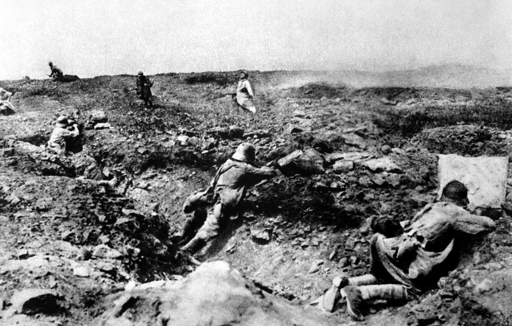

HISTORIANDO
HISTORIANDO

-> Primeira Guerra Mundial
A Primeira Guerra Mundial(1914-1918) foi o primeiro conflito armado envolvendo de forma direta ou indireta todos os continentes do globo. Basicamente a Primeira Guerra Mundial foi composta de duas alianças, a Tríplice Entente, formada por França, Inglaterra, Rússia (até 1917) e Estados Unidos(pós 1917), e a Tríplice Aliança, formada por Itália, Alemanha e o Império Austro-Húngaro. O estopim da guerra foi o assassinato do herdeiro do trono Austro-Húngaro, Francisco Ferdinando, porém países como Alemanha e Itália à tempos vinham discontentes em relação à suas colônias na África e na Ásia, uma vez que esses países praticamente ficaram de fora do processo neocolonial. A Primeira Guerra Mundial foi marcada pelo uso de trincheiras, gás de mostarda e da introdução da aviação no campo militar, além disso ela foi responsável por matar mais de 9 milhões de pessoas e ferir outras 30 milhões considerando entre civis e militares.
-> Fatores
-> Imperialismo - Neocolonialismo O final do Século XIX e o início do Século XX é marcado pela disputa tecnológica, econômica e armamentista entre as principais potências européias da época, como Alemanha, França, Inglaterra. Esses países viviam um período de euforia no setor econômico e tecnológico, que resultou em um afloramento industrial, com o surgimento de inúmeros produtos e serviços que podiam ser comercializados, com isso, a disputa pelo mercado e por matéria-prima tornava-se cada vez mais acirrada, e assim os olhos das nações européias se viram para a África e Ásia, potenciais mercados consumidores e fornecedores de matéria-prima. Assim esses continentes foram praticamente "fatiados" entre as potências européias, sendo que países como Alemanha e Itália acabaram levando uma "fatia" muito pequena (isso se deve ao fato de que esses países enfrentavam problemas internos o que resultou em um atraso no processo de neocolonização).
-> Assassinato do Arquiduque Francisco Ferdinando O Império Austro-Húngaro englobava diversos países do leste europeu, porém a população de alguns desses países tinham uma certa rejeição em relação à interferência do Império Austro-Húngaro no leste europeu e na região dos Balcãs. O a oposição mais famosa era o grupo extremista sérvio conhecido como Mão-Negra, que realizava diversos atentados como forma de protesto, e em um dos atentados a Mão-Negra assassinou o herdeiro do trono Austro-Húngaro, o Arquiduque Francisco Ferdinando em uma visita que o mesmo fazia à Saravejo, na Bósnia. Com a morte do Arquiduque, deu-se início à chamada Crise de Julho, onde os países de ambos os lados realizavam manobras políticas para tentar solucionar o impasse diplomático. Finalmente o Império Austro-Húngaro entregou a Sérvia o Ultimato de Julho, uma série de dez reinvidicações à serem cumpridas por aquele país, e quando a Sérvia concordou apenas com oito das dez reinvidicações o Império Austro-Húngaro declarou guerra à Sérvia. Instantaneamente a Rússia declarou guerra ao Império Austro-Húngaro, o que levou a Alemanha declarar guerra à Rússia e à França. Já a França e a Inglaterra só declararam guerra à Alemanha quando a mesma invadiu a Bélgica e atacou tropas francesas em agosto de 1914.
-> A Guerra
A Primeira Guerra Mundial pode ser dividida basicamente em três fases, sendo elas: --> Guerra de Movimento (1914-1915). --> Guerra de Trincheiras (1915-1916). --> Ofensivas (1916-1918).
-> 1º Fase : Guerra de Movimento(1914-1915) Esta fase inicial dos conflitos da Primeira Guerra Mundial é caracterizada pela intensa movimentação das tropas de ambos os lados, além disso, é nessa fase da guerra que diversos países do mundo tomam partido de algum lado das partes conflitantes na guerra. Começa a produção de artefatos bélicos em grande escala, com isso as mulheres substituem os homens nas fábricas, uma vez que os mesmos acabam indo para os campos de batalha. A chamada Guerra de Movimentos contou com movimentos de tropas militares não somenta na Europa, mas também na África e na Ásia.
-> 2º Fase: Guerra de Trincheiras Essa fase, conhecida como Guerra de Trincheiras acabou se tornando uma das características da Primeira Guerra Mundial, onde os soldados passavam semanas dentro das trincheiras defendendo seus territórios, além disso, foi a fase mais sangrenta da guerra, a conquista de territórios era um processo lento. A vida dos soldados dentro das trincheiras era extremamente difícil, com condições de higiêne precárias, a presença de ratos e insetos era comum. Entre as trincheiras inimigas havia a chamada Terra de Ninguém, que eram zonas extremamentes perigosas que ficavam sob a mira dos dois exércitos.
-> 3º Fase: Ofensivas Essa fase é marcada pelo efeito que a saida da Rússia e a entrada dos Estados Unidos causaram na guerra. A saida da Rússia possibilitou a invasão da França e da Itália pelas forças alemãs. Porém, por outro lado, a entrada dos EUA na guerra, fez da Entente uma máquina de guerra, com a chegada de um grande contingente de homens(cerca de 1,2 milhões) e de armas(entre essas armas, algumas nunca vistas antes em campo de batalha, como aviões e tanques).
-> Fim da Guerra e Consequências
Com as ofensivas da Terceia Fase da Primeira Guerra Mundial, no final de 1918, a Alemanha já não tinha consições de vencer o conflito, assim sob forte pressão popular, o Kaiser Guilherme II abdica do poder, e assim o governo alemão assina o Amstício de Compiègne, dando a vitória para a Tríplice Entente.
-> O Tratado de Versálles: Impôs pessadas punições para a Alemanha, considerando-a como a principal culpada pela Primeira Guerra Mundial, entre essas punições podemos destacar: -> Devolução da Alsácia-Lorena para os franceses. -> Todas as colônias alemãs passariam para os países vencedores. -> Reduziu o exército alemão para 100 mil homens. -> Alemanha não poderia ter marinha e nem aviação militar. -> Pagamento em dinheiro de valores exorbitantes por percas materiais. -> Fiscalização da produção bélica alemã.
-> Considerações: O Barão Vermelho
Manfred von Richthofen, mundialmente conhecido como Barão Vermelho, foi um aviador alemão que atuou na Primeira Guerra Mundial, tornando-se uma lenda da aviação após obter 80 vitórias em combates aérios durante a guerra, fato que rendeu à Manfred o título de Ás da Aviação. Ele morreu em combate em 1918 na França.
-> Política de Alianças Com a crescente disputa por mercado e matéria-prima, a aliança entre países tornou-se uma prática comum, e assim surgiram: -> Tríplice Aliança: Alemanha, Itália e Império Austro-Húngaro. -> Tríplice Entente: Rússia, França e Inglaterra.
-> Ausácia-Lorena A rica região de Ausácia-Lorena foi o pivô da Guerra Franco-Prussiana(1870-1871), envolvou França e Alemanha, que disputavam pela higemonia na região em questão, no fim, a Alemanha, na época chamada de Prússia, acabou vencendo e dominando a região. França e Alemanha não tinham boas relações diplomáticas muito antes do início da Primeira Guerra Mundial em 1914.
Acontecimentos que mudaram o rumo da Guerra
-> Saida da Rússia da Guerra : Enquanto os soldados russos combatiam nos frontes de batalha pela Europa, a população russa vivia um verdadeiro inferno dentro de seu país, a pobreza atingiu níveis caóticos, muitos morriam de fome e de frio, enquanto o Czar Nicolau, soberano da Rússia, gastava milhões com esforços de guerra. Logo a população, começou a questionar a necessidade da Rússia em participar da Primeira Guerra Mundial. Assim começou a histórica Revolução Russa de 1917 liderada por Lênin, Trotsky e Stálin. Diante de uma guerra civil, a Rússia se viu obrigada a abandonar a Primeira Guerra Mundial no ano de 1917, na chamada Segunda Fase da Guerra.
-> Entrada dos EUA na Guerra: Os Estados Unidos vinham participando de forma indireta da Primeira Guerra Mundial, pois fornecia mantimentos e armas para a Tríplice Entente, desse modo alguns países, principalmente França e Inglaterra vinham acumulando uma enorme dívida com os EUA. Quando a Rússia abandona a Guerra em 1917, os Estados Unidos vêem o perigo eminente da derrota da Entente, o que seria um desastre ecônomico, uma vez que países dessa aliança tinham divídas estratosféricas com os americanos, assim os EUA decidem que está na hora de entrar de cabeça na Primeira Guerra Mundial, e quando os alemães afundam um navio de carga amaricano, o presidente Roosvelt vê a desculpa perfeita para declarar guerra aos Aliados, assim, no dia 6 de abril de 1917, os Estados Unidos passa a integrar a Tríplice Entente, que agora contava também com a Itália(que abandonará os Aliados em 1915).
-> Galeria de Fotos
|  | ||